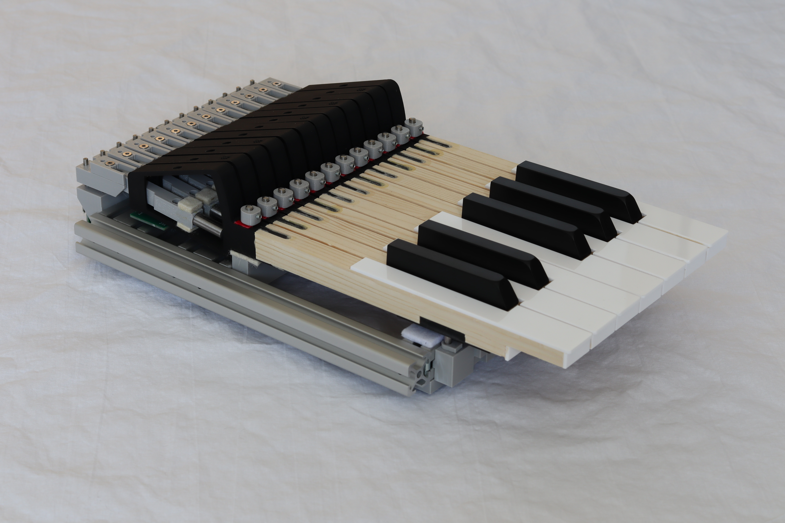
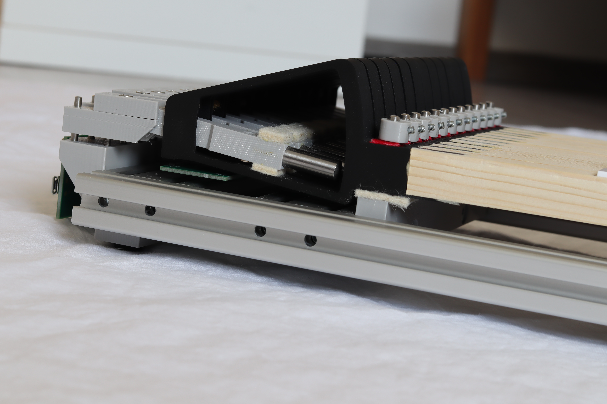
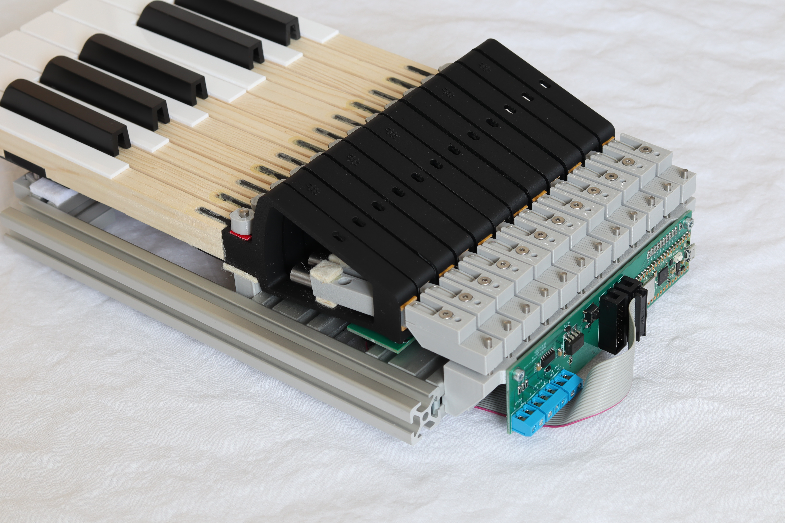

Kinetisch orgelkeyboard
Transparante prijzen & documentatie. Wij geloven in openheid — prijs, gebruikershandleidingen en technische documentatie zijn hier direct in te zien, zonder registratie of aanvraag.


Belangrijkste kenmerken
| Omvang | 61 toetsen (5 octaven) |
| Afmetingen | 890 × 355 × 85 mm |
| Gewicht | 7,3 kg |
| Magnetische Druckpunkt | Instelbaar 70–200 g |
| Toetsweg | Instelbaar 9–11 mm |
| Traagheidsniveaus | Het gewicht van de hefbomen kan worden aangepast aan individuele behoeften. Kies uw voorkeur voor lichtere of zwaardere aanslag |
| MIDI-uitgang | Velocity-sensitive MIDI (inclusief HALL-SCANNER64-module) |
| Slimme kalibratie van het schakelpunt | Na het instellen van de toetsweg en Druckpunkt hoeven de individuele schakelpunten niet meer met schroeven te worden ingesteld. Kalibratie gebeurt via de HALL-SCANNER64 WiFi-instellingen. |
Wat is een kinetisch keyboard?
Een kinetisch keyboard verschilt van gewone MIDI-keyboards doordat elke toets een eigen hefboommechanisme met een gewicht heeft. Bij het indrukken voelt u eerst een lichte vrije slag, dan de Druckpunkt (een punt dat het openen van de ventielen simuleert), gevolgd door een traagheidsweerstand die afhankelijk is van de aanslagsnelheid — net als bij een echte mechanische orgeltractuur. Het is deze traagheidskrachtcomponent die het speelgevoel en het oefenen van de juiste techniek sterk beïnvloedt. Traditioneel simuleren orgelkeyboards alleen de Druckpunkt, maar niet de traagheidsreactie. Echte mechanische tracturen worden echter juist gekenmerkt door hun aanzienlijke traagheid, dus het alleen simuleren van de Druckpunkt is in principe onvoldoende.
Speciale versies op aanvraag
Op verzoek kunnen wij keyboards in aangepaste uitvoeringen produceren — bijvoorbeeld met een kleinere omvang (minder toetsen), met verschillende toetsbekledingen (exotisch hout, enz.) of met een afwijkend profiel van de voorzijde.
Testmogelijkheid
Serieuze geïnteresseerden kunnen 1-octaaf keyboardmodellen tegen borging lenen om te testen. U kunt controleren of de kinetische aanslag bij u past en de ideale instelling kiezen. Het keyboardmodel wordt inclusief MIDI-elektronica verstrekt, zodat de volledige functionaliteit en compatibiliteit kunnen worden getest. De toetsen C–F hebben een hoger gewicht, de toetsen F♯–B een lager gewicht.
  


Prijs vanaf: 1 820 EUR (excl. BTW)